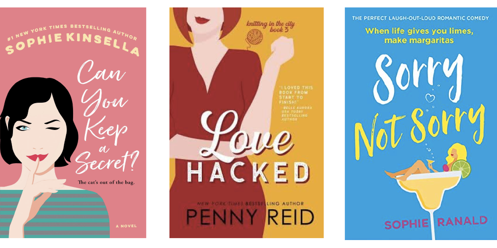
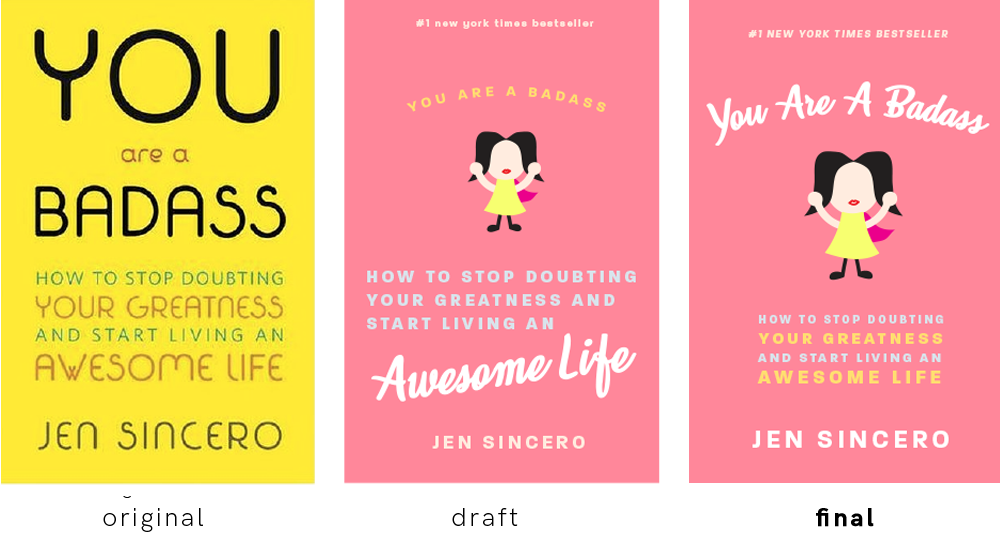
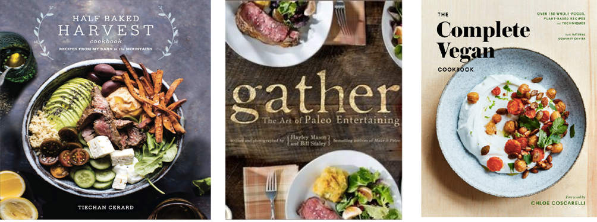
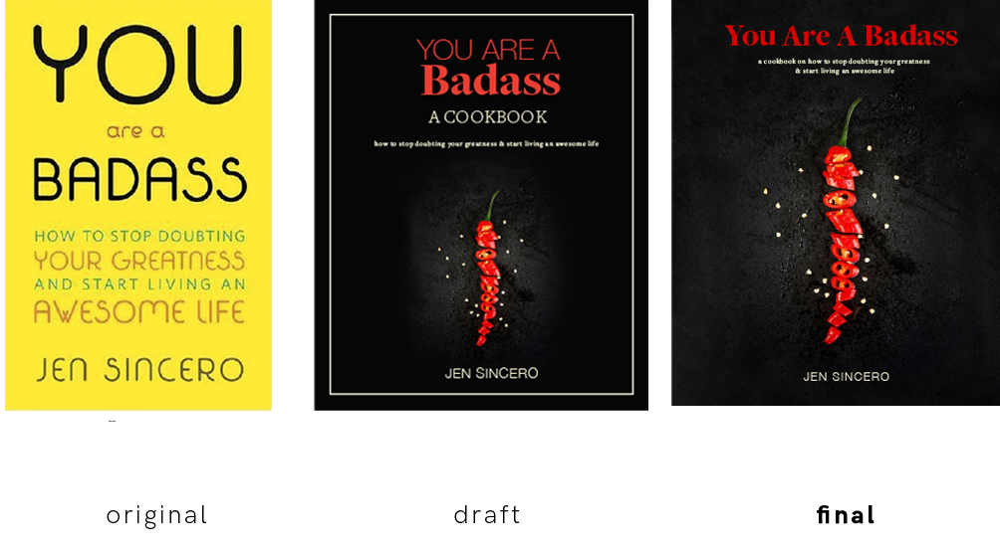
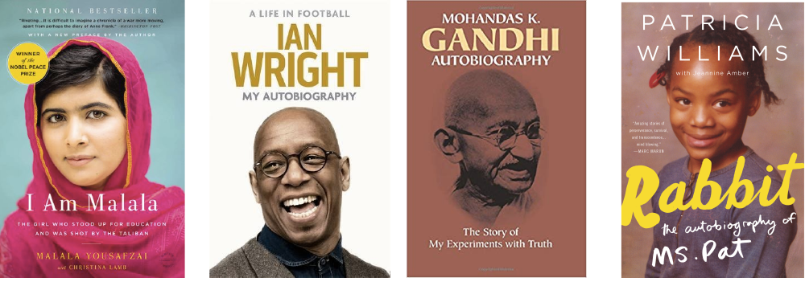
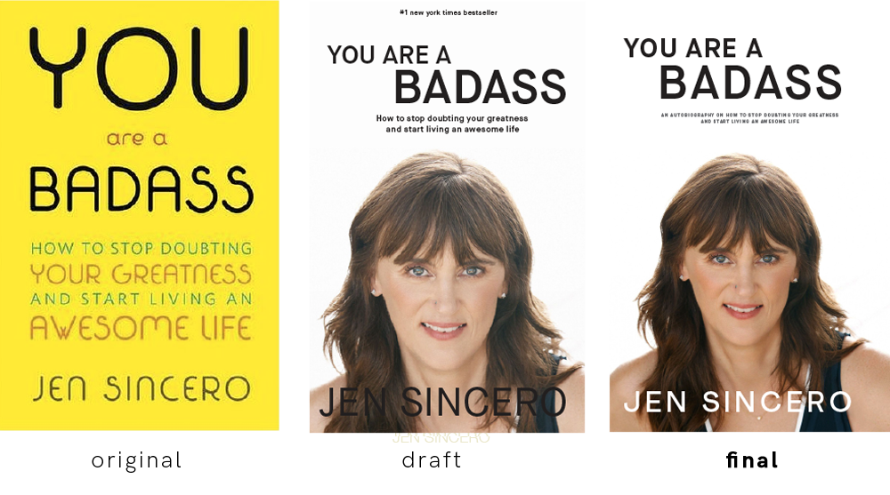
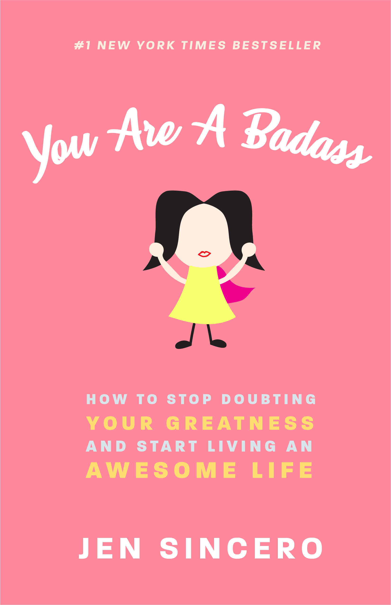
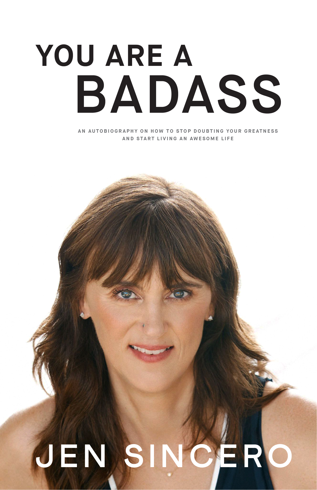
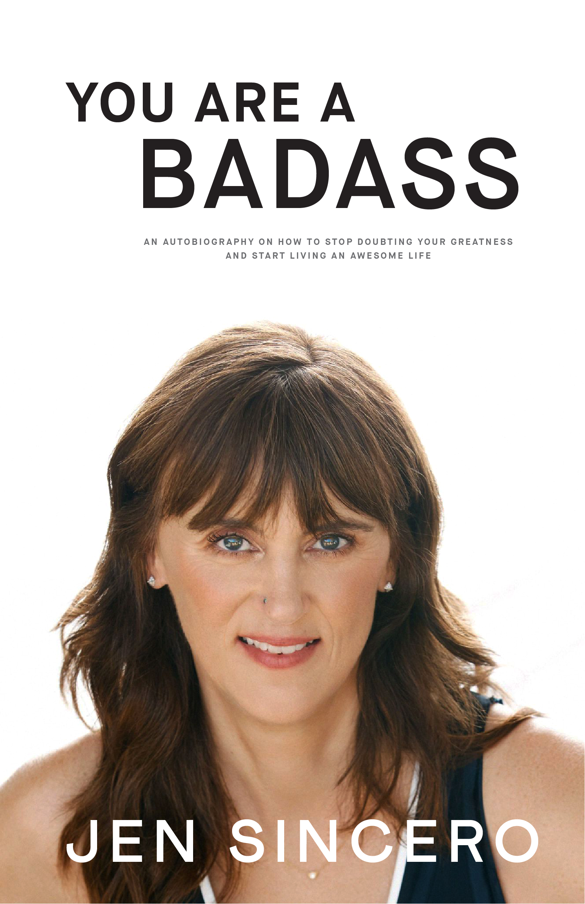

02
Book Redesign
year
october 2019
type
art direction , graphic design
duration
3 weeks
team
solo project
project description
In my book design class for my print and publishing course, I was tasked to redesign the cover of a book in three other genres of my choosing. In my case, I chose to work with the book called “You Are A Badass: How to Stop Doubting Your Greatness and Start Living an Awesome Life” written by Jen Sincero which of self-help and motivational genre, and I redesigned it as Romantic Comedy novel, a Cookbook, and an autobiography.
01. Romantic Comedy
key elements
light pastel colors or brighter colors such as reds/pinks/light blues/light yellow, decorative type with sans-serif type, and illustrations .
the idea
My first cover is a romantic comedy in which I chose to do because the in some parts of the book, the tone is of humorous and cliche nature. Based on my research, a common colour scheme amongst romantic-comedy books are on the lighter side. They often have bright or pastel shades of colours such as red, pink, blue, and yellow which is why I tried to incorporate the same concept. In terms of typeface, romantic comedy books also have some sort of decorative type on the page, in combination with some type of sans serif. Lastly for imagery, there is often some style of illustration on the cover, so I drew a female with a cape to represent the heroic sense of self that the book promotes to readers.
inspiration
work in progress
01. Cookbook
key elements
real, high-quality images of food, serif types, emphasized author titles, smaller text around, solid shades of colors ( unlike pastel colors ).
the idea
My second cover is a cookbook which is far from the original genre, but I chose to do this because the book provides steps to the readers, similarly as a cookbook would. Based on my research, cookbooks often have an image of real food on the cover which hints at what the cookbook is about. In my case, I chose to use a chili as a metaphor for the book’s message. Furthermore, the book encourages readers to go out of their comfort zone and is a rewarding feeling once accomplished, just as it takes will to be able to tolerate spicy food. Most cookbooks mix a combination of serif and sans-serif on the cover, so I did that in my version as well, using different weights and colour to establish hierarchy.
inspiration
work in progress
03. Autobiography
key elements
large emphasis on subject’s name and autobiography title (if there is one), portrait shot of subject, simple serif texts for newer bibliographies.
the idea
My third cover is an autobiography which was in theme with the overall nature of the book; the author speaks in first person and shares her personal experiences alongside giving advice to readers. Most autobiographies have a portrait of the subject on the cover, with big emphasis on the subject’s name and title of the autobiography. In my case, I placed Jen Sincero on the cover with efforts of emphasizing her name and the autobiography title as “You Are a Badass”. While older autobiographies often had serifs, newer autobiographies primarily use a sans serif so I did the same with mine, using it in colours that complement the image.
inspiration
work in progress
final covers
 

reflection
Overall, this project allowed me to exercise my graphic design skills and challenged my acility to emulate a visual identity. I learned how to design based on the context given, and express my take on these genres. l also earned the art of designing for an audience given, and combining different elements to make sure that this is well communicated.
Through this assignment, I also gained better knowledge of using photoshop and illustrator to manipulate graphics specifically the way I want it to look.